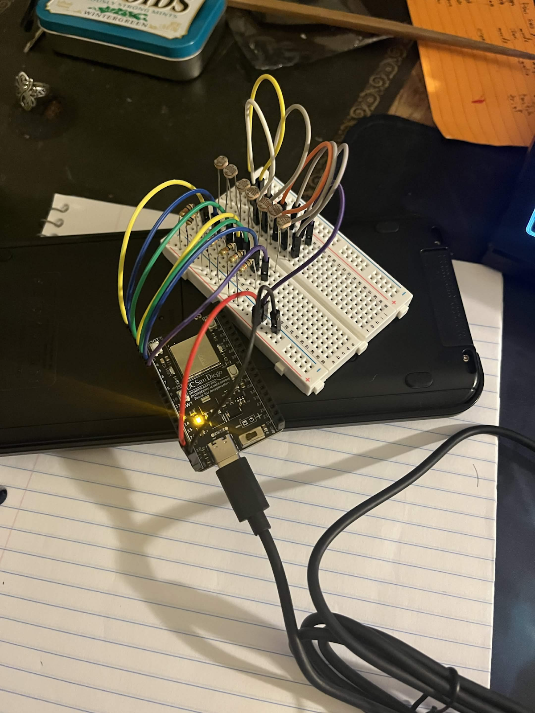
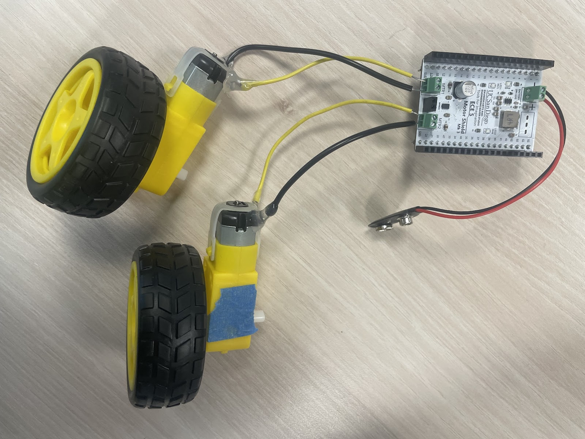
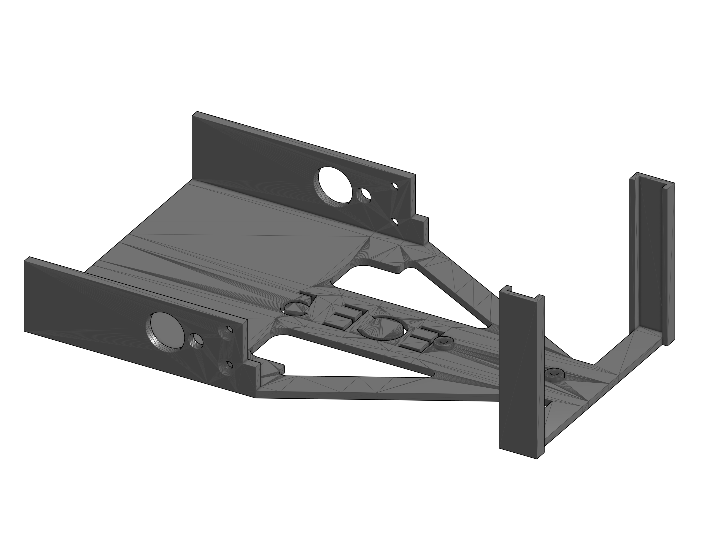
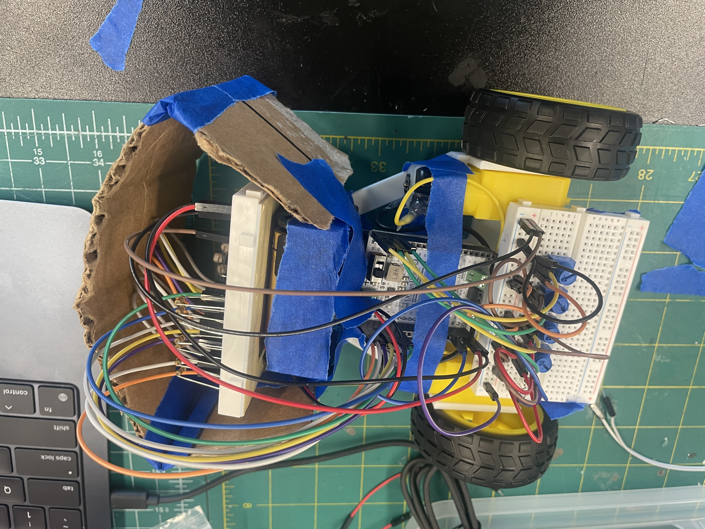
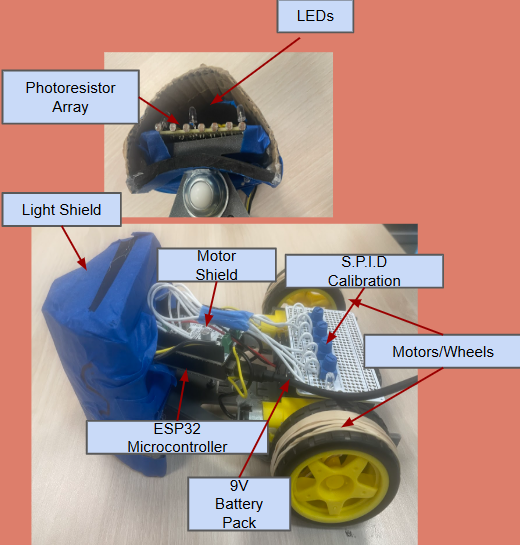
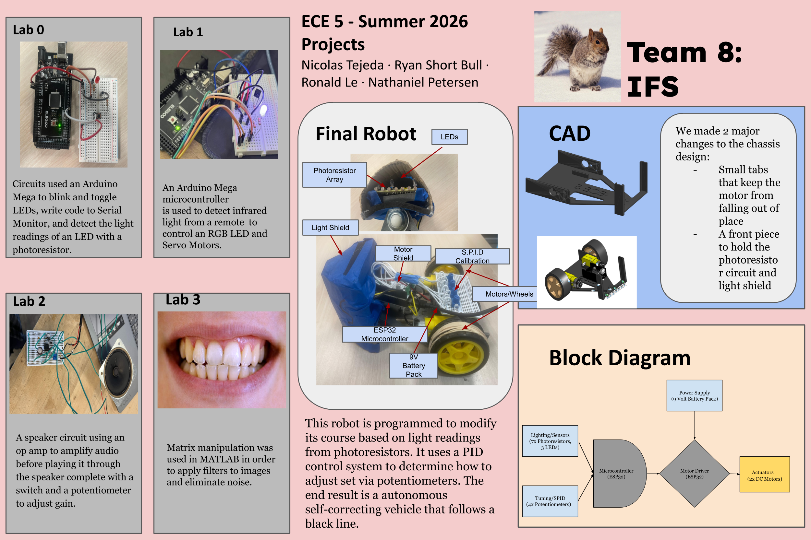
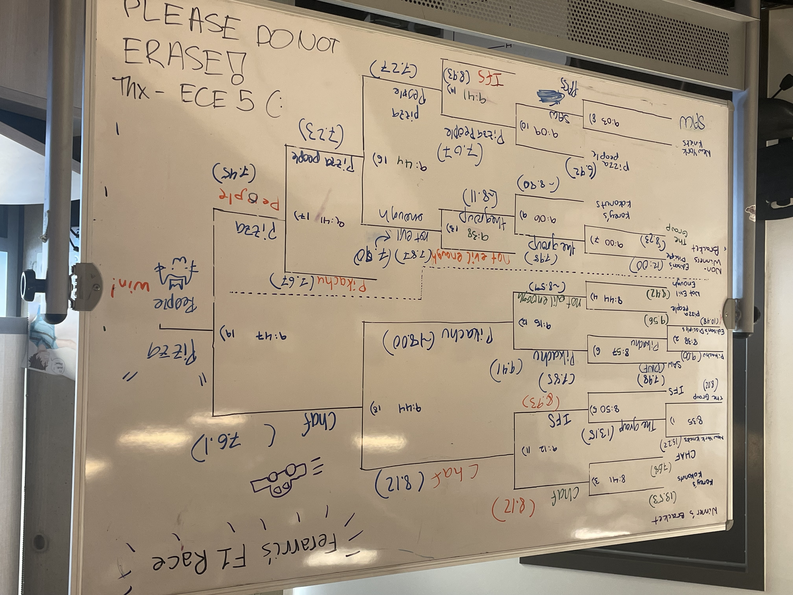
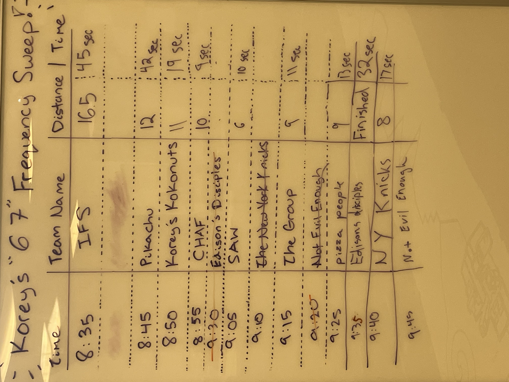
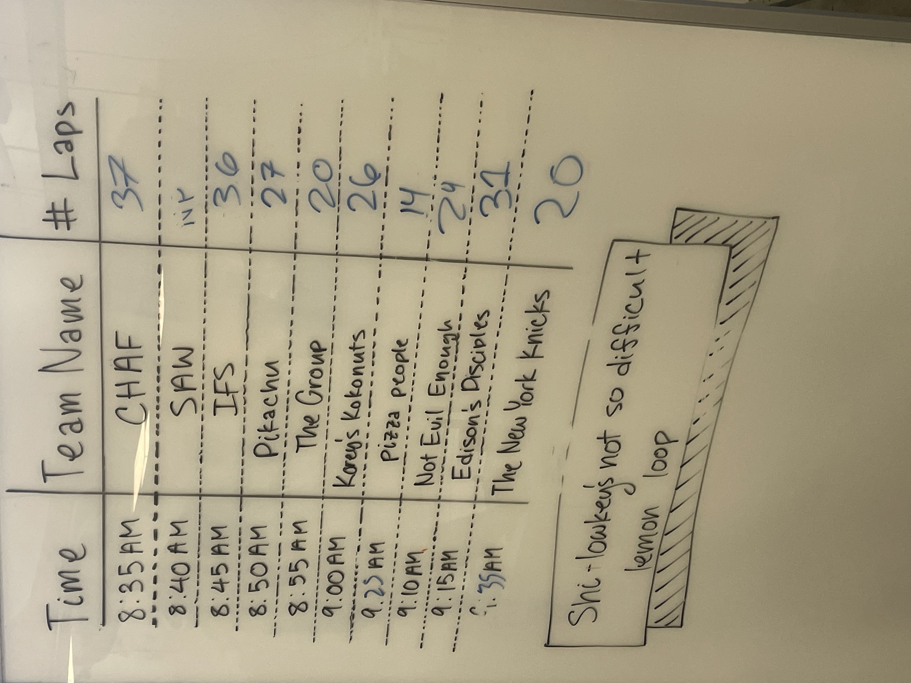

Prototyping
We began by constructing and testing the various parts of our robot on breadboard. This included the calibration circuit constructed out of potentiometers, the motor/wheels, photoresistor circuit, motor driver, and chassis components.

Calibration Circuit

Photoresistor Circuit

Motor & Wheels

Chassis
Assembly

Following a Line!
Photo of Final Competition Robot

PID Control
PID control allows our robot to continuously adjust its direction based on the error measured by the photoresistors. The controller uses three components, P, I, and D, to determine how strongly and how quickly the robot should correct its course.
Proportional
Corrects based on the robot's current error.
Integral
Corrects based on accumulated error over time.
Derivative
Reduces overshooting by responding to changes in error.
PID Video Explanation
Choosing Our PID Values
We tested different combinations of speed and PID values to find settings that allowed the robot to perform reliably on each track. Because each track presented different challenges, we adjusted the controller rather than using one set of values for every event.
Frequency Sweep
Why these values?
We used these settings because we needed to prioritize accuracy over speed.
To achieve this, we cut speed and P to near zero (since we don't need speed or fast correction).
We lifted I and D to slightly higher but still somewhat low settings so that if there is a sharp turn then the
robot will be able to turn sharper as error accumulates over time but will hopefully not overshoot.
Circle
Why these values?
We used these settings because
we need to be decently fast, but since the track is relatively predictable with no sharp turns,
we only need very a small correction from our P, I and D.
Drag Race
Why these values?
These settings are almost identical to those we used for loop.
Once again, speed is a priority, and only a small correction is needed.
Since the race track is almost a straight line we set P even lower than for loop.
Poster

Competition Results
Our robot competed in all three competition tracks. The results below show our performance and ranking for each event.
Drag Race
Frequency Sweep
Loop
Ranking Boards
Drag Race Rankings

Frequency Sweep Rankings

Loop Rankings
